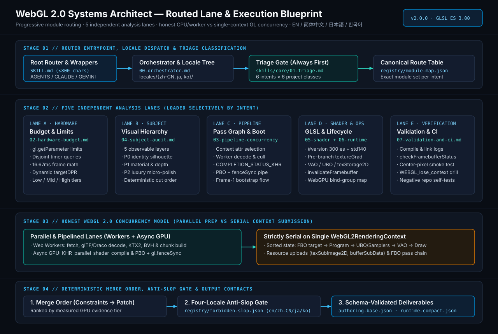
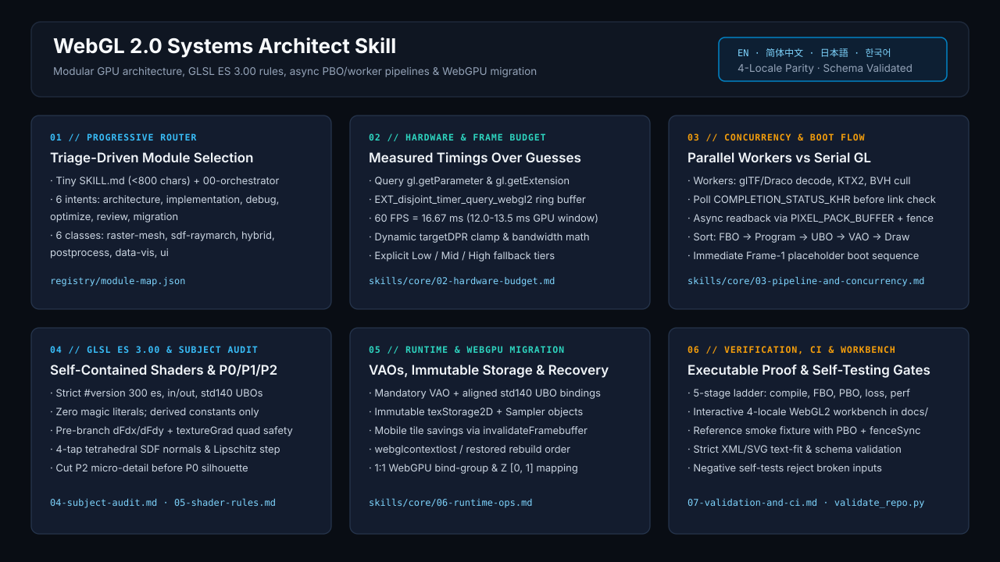

Modular GPU Engineering Skill · 4 Locales · Live Telemetry
WebGL 2.0 Systems Architect Workbench
A routed engineering skill for WebGL 2.0 renderer architecture, GLSL ES 3.00 shader review, hardware frame-budget math, non-blocking PBO + fenceSync pipelines, context-loss recovery, and WebGPU migration.
6 × 6
Intents × Project Classes Routed
5 Lanes
Hardware, Subject, Pipe, Shader, CI
4 Locales
EN · 简体中文 · 日本語 · 한국어
16.67 ms
60 FPS Budget & Dynamic DPR Math
Live WebGL 2.0 Proof & GPU Telemetry
#version 300 es · VAO · std140 UBO · PBO + fenceSync · Context Recovery
PBO [128,128] RGBA: awaiting probe...
MAX_TEXTURE_SIZE--
MAX_3D_TEXTURE_SIZE--
MAX_COLOR_ATTACHMENTS--
MAX_SAMPLES (MSAA)--
UBO_OFFSET_ALIGNMENT--
KHR_parallel_compile--
Frame-Budget, Bandwidth & DPR Clamp Calculator
Derive gpuBudgetMs, pixel traffic, and targetDPR before cutting P0/P1 features (02-hardware-budget.md)
Available GPU Window
12.67 ms
Estimated Frame GPU Time
19.91 ms
Recommended targetDPR Clamp
1.59x
Memory Bandwidth @ Native DPR
11.94 GB/s
targetDPR = min(deviceDPR, 2.0, sqrt(gpuBudgetMs / (cssMpx * msPerMegapixel)))
Interactive Triage Router & Module Matrix Inspector
Select an intent and project class to inspect the exact module set from registry/module-map.json and parallel lanes
CANONICAL MODULES LOADED (registry/module-map.json):
Routed Lane & Concurrency Architecture Blueprint
Vector SVG diagram validated for strict XML well-formedness and container text-fit margins

Six-Pillar Skill Engineering Overview
Progressive router, hardware frame budget, concurrency, GLSL ES 3.00 math, runtime lifecycle, and CI gates
